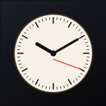

opencode repo
Твики и приложения для iPhone на iOS 12 с джейлбрейком: живые обои, часы экрана блокировки в стиле новых iOS и Telegram без Apple ID.
https://dreyzedev.github.io/
Добавить в Cydia
Пакеты

Motion Walls 1.1.0 Новое
Живые обои: каталог с аниме, машинами и играми в одно касание, 24 встроенных анимированных (сияние, частицы, жидкость, волны, космос) и любые видео или Live Photo из галереи — на экран блокировки, «Домой» или оба.

Lock Clock Studio 2.1.0
Часы экрана блокировки как в iOS 16–26: 8 шрифтов, плавная толщина, системы цифр, стили «Сплошной», «Яркий» и Liquid Glass, цвета цифр и даты, высокие цифры. Приложение с живым предпросмотром.
Telegram 10.0.3-3
Официальная сборка Telegram для iOS 11+ без Apple ID, без баннера обновления.
iOS 2 Lock Clock 1.0.0
Ретро-циферблат в стиле iOS 2 на экране блокировки. Ставится вместо Lock Clock Studio.